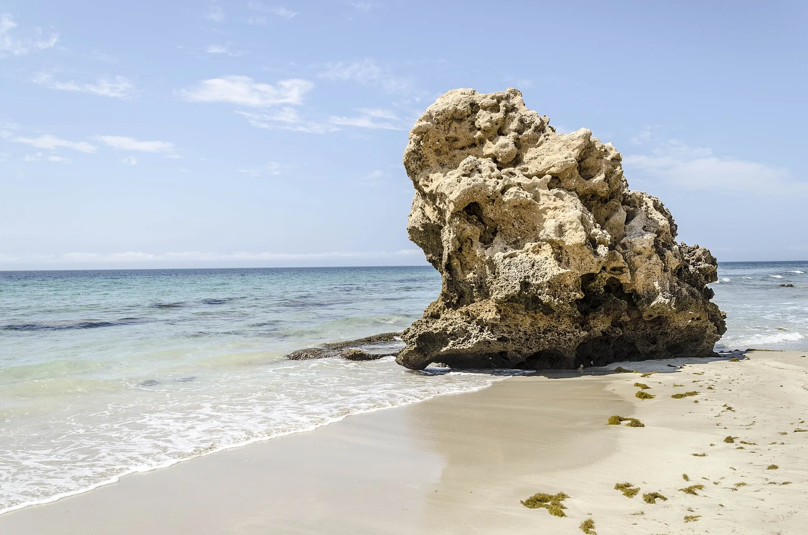

Playa de Bolonia
Cadix, Espagne · kitesurf, windsurf, baignade

Plage préservée avec une immense dune et des ruines romaines, face au Maroc. Le levant et le poniente du détroit en font un spot de glisse puissant.
- Lieu
- Cadix, Espagne
- Niveau
- Intermédiaire
- Activités
- kitesurf, windsurf, baignade
- Type d'eau
- Mer / océan
- Coordonnées
- 36.09, -5.77 (position approximative du secteur)
Dangers à connaître
- Levant violent et rafaleux.
- Dune protégée : reste sur les chemins.
Le conseil d'Ocean Buddy
Par levant très fort, la plage devient difficile : préfère Tarifa ou les jours de poniente.
Ouvrir dans Ocean Buddy Télécharger sur l'App Store
Source : Fiche Ocean Buddy · septembre 2026 · à vérifier localement.